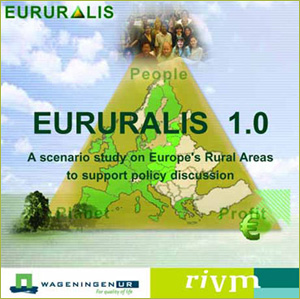

Eururalis 2.0 has two main objectives. The first objective is to provide a tool for a structured strategic discussion at a European scale. This enables discussions between policy makers, stakeholders and scientists from different domains and/or countries. The second objective is to develop and improve Eururalis in order to produce a scientifically sound framework for integrated assessment at the European level. Within this framework developments on different scales (from global to local) and contrasting issues are connected. Given the complexity and broad perspective the development of the Eururalis tool is carried out in a number of steps: This is version 2.0. |
 Eururalis 1.0 |